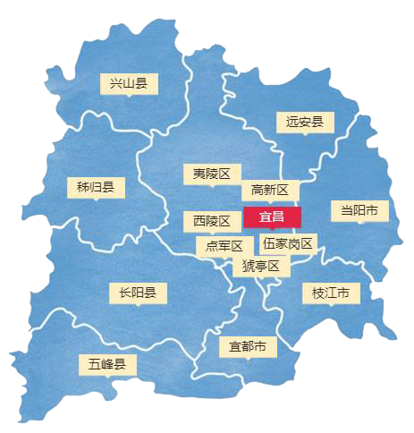

- 宜昌曾经是楚文化和巴文化发展的地望。这里孕育出中华诗祖屈原、民族和亲使者王昭君以及学者杨守敬等诸多先贤名流，历代文人诸如李白、杜甫、白居易、欧阳修、苏轼、陆游等，也多会于此。他们游览西陵山水所留下诗文，为宜昌增添了文化财富。
- 宜昌还以“三国故地”而著称，古典名著《三国演义》中有三十六个故事发生在这里。这里还是埋葬关公正身的“五阳”之地，建有关帝陵。同时也是关公文化的考察研究之地。被誉为“世界四大文化名人”之一的屈原，被称为“中国古代四大美人”的王昭君都出生在古宜昌境内，境内还有屈原祠、昭君村、读书洞、娘娘井等众多的历史文化遗迹。
- 在抗日战争时期，在宜昌即将沦陷的危难时刻，发生过一件堪比“敦刻尔克”大撤退更艰苦的奇迹——“宜昌大撤退”。在几乎所有重要物资撤离后，日军才姗姗来迟，“枣宜会战”爆发了。
|
 |